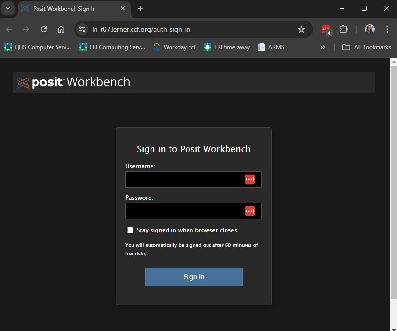
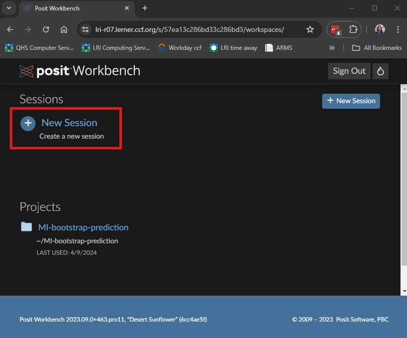
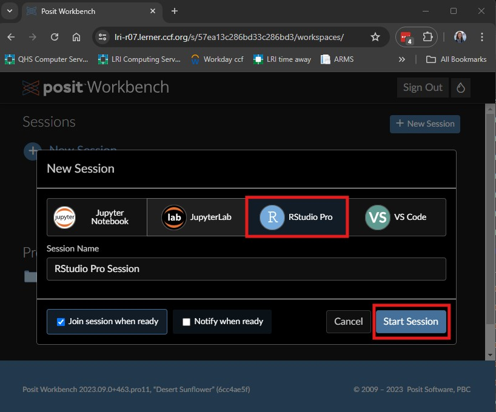
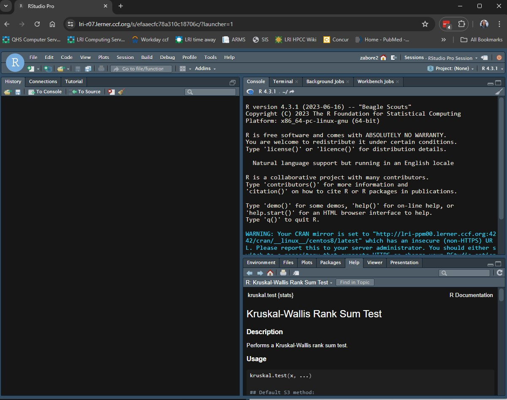
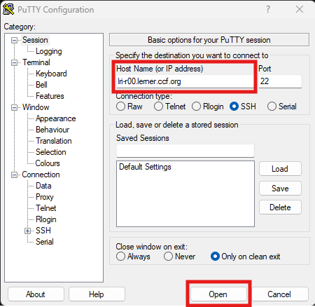
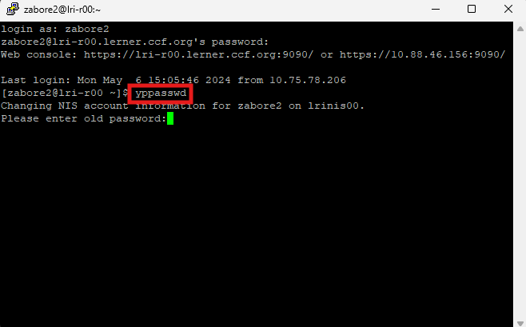

Introduction to the tools
In the first part of Session 1, we will introduce the tools used in this course. We will primarily be working in Posit Workbench, but it is important to know how to install and use the tools on your own as well for future use.
If this is your first time learning to program, you might find it overwhelming at first. That is okay, and to be expected. Programming is best learned by doing, doing repeatedly, and looking up how to do. Keep going, ask questions, and refer often to the resources provided in this course.
Stop and ask questions anytime! I am gearing this material to new learners of R but as an advanced user myself it is possible I can overlook something that I need to explain in more detail. Please stop me and ask if anything is unclear!
Some of the topics covered here will be more or less useful to each of you, depending on the type of work you do and how much and what type of data are involved. But all of it will help you have a strong foundation even if the specific topics here are not directly applicable in your field.
R and RStudio are two separate things, and to use both you will need to install two programs onto your personal computer.
R

- R is a free, open-source software environment for statistical computing and graphics
- Many of the functions you may wish to use will be contributed by other users as packages and available through repositories such as CRAN, GitHub, or Bioconductor, among others
- It is your responsibility to vet the quality and accuracy of any user-contributed packages
- The functions available with the initial installation of R, known as base R, can be considered trustworthy
- Go to the website for The Comprehensive R Archive Network.
- The top of the web page provides three links for downloading R. Follow the link that describes your operating system: Windows, Mac, or Linux.
- Select the appropriate operating system
- Windows: Then click “base”, then click “Download R-x.y.z for Windows” where x.y.z corresponds to the current version of R, then double click the .exe file that downloads and follow the prompts. Mac: Then click the option corresponding to your Mac model, then double click the .pkg file that downloads and follow the prompts
RStudio

- RStudio is an Integrated Development Environment (IDE).
- It runs R and allows users to develop and edit programs and offers higher quality graphics and a more user-friendly interface.
- Note that RStudio is not a standalone program, you must have a separate installation of R
- Go to the website for RStudio
- Select “Download RStudio Desktop” under “Open Source Edition”
- Click the button for “Download RStudio”
- Scroll down and select the appropriate version for your operating system
- An installer will download - double click on it and follow the prompts
Posit Workbench

- We will primarily use Posit Workbench on the servers, where the R version and many R packages are updated regularly
- See the wiki for details: http://jjnb-wiki-v-00.bio.ri.ccf.org/index.php/Running_R
- Login in using your Linux credentials at one of the links, for example lri-r07: https://lri-r07.lerner.ccf.org/auth-sign-in

- Select “New Session”

- Select “RStudio Pro” then click “Start Session”

- You will have some version of the below appear. Note that it will not be identical to this as I have changed many options over time for my personal preferences.

The layout of the panes can be customized by going to Tools > Global Options > Pane Layout. I can help you customize as well if there are things you prefer, just ask!
Changing your Linux password
- Type “putty” into the search bar on your computer and open the PuTTY application
- Type “lri-r00.lerner.ccf.org” in the Host Name field. The rest of the defaults should be okay.

- Click “Open”.
- At the prompt that says “login as:” type your username and hit Enter
- Type your current password and hit Enter
- Type “yppasswd” and hit Enter
- Follow the prompts, which will ask you for:
- Your old password
- Your new password
- Your new password again to confirm

Using RStudio
Rstudio panes:
Text editor (i.e. R script) - this is where you will type your code, and you will save this file to a project folder for reproducibility
Console - this is where the code will be executed
Other panes will contain a variety of tabs. Some to note include:
- Environment: where you can see objects and data files that are available in your current session
- Files: here you should be able to access all folders and files on your home drive
- Plots: this is where plots will display
- Help: this is where you will get help files for R functions
- Viewer: this is where you would preview any html output like a gt table or Quarto document
Using the text editor in RStudio:
Always use a text editor to type code so that it can be saved for reproducibility purposes.
How to open a text editor window:
- To open a new text editor window go to: File > New File > R Script
- To save the file go to: File > Save
Sending code to the console
To send this to the console to be executed, you can do one of the following:
- Place your cursor next to the line you want to run and hit Ctrl+Enter on your keyboard
- Place your cursor next to the line you want to run and hit the “Run” button
- Highlight multiple lines of code and use one of the previous options